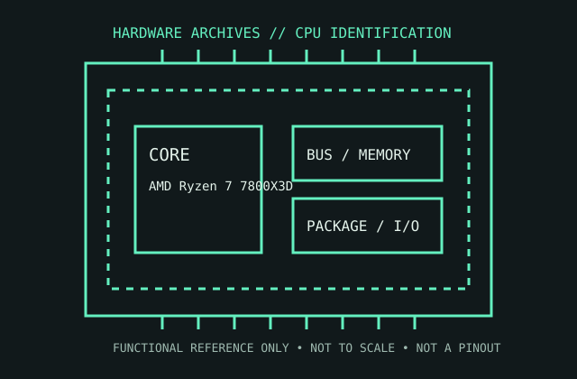

[ MODERN CORE AND RYZEN // IDENTIFIED COMPONENT ]
AMD Ryzen 7 7800X3D
The Zen 4 Ryzen 7 7800X3D combines eight cores with 3D V-Cache, targeting AM5 gaming and desktop systems.

MODEL IDENTIFICATION: AMD Ryzen 7 7800X3D. Read the full top marking/OPN, speed grade, package, and stepping from the physical part; do not transfer specifications across similarly named revisions.
Recorded specifications
| Cataloged part | AMD Ryzen 7 7800X3D |
|---|---|
| Era / family | AMD Ryzen 7000 Series / Zen 4 with 3D V-Cache, launched 2023. |
| Key specifications | 8 cores / 16 threads; 4.2 GHz base and up to 5.0 GHz boost; 96 MB L3 cache; 120 W default TDP; AM5; DDR5 only; integrated Radeon graphics with 2 graphics cores. |
| Interface / fit | Requires AM5 motherboard with a supporting BIOS and DDR5 memory. The AM5 package is not compatible with AM4 boards; check the motherboard CPU list and thermal/cooler provisions. |
| Variants / identification | 7800X3D is an 8-core 3D V-Cache model distinct from 7950X3D/7900X3D chiplet layouts and non-X3D Ryzen 7 7700X. Maximum boost is workload/thermal dependent. |
Compatibility and service notes
- Requires AM5 motherboard with a supporting BIOS and DDR5 memory. The AM5 package is not compatible with AM4 boards; check the motherboard CPU list and thermal/cooler provisions.
- 7800X3D is an 8-core 3D V-Cache model distinct from 7950X3D/7900X3D chiplet layouts and non-X3D Ryzen 7 7700X. Maximum boost is workload/thermal dependent.
- Keep firmware/AGESA version and memory profile recorded; verify cooler contact and temperatures before sustained load. Confirm exact CPU support and any board BIOS requirements before installing.
- Before installation, compare the exact CPU marking with the motherboard maker’s support list, board revision, BIOS minimum, package/socket, power requirements, and memory type. Do not force a package into a socket.
Service & archival record
Keep firmware/AGESA version and memory profile recorded; verify cooler contact and temperatures before sustained load. Confirm exact CPU support and any board BIOS requirements before installing.
For a collection record, photograph both sides, retain the full model/OPN and date/lot codes, describe package and contact condition, and record the tested motherboard revision, firmware, cooling, memory, and measured operating conditions. Separate measured observations from published limits.
Sources & further reading
- AMD Ryzen 7 7800X3D official product specificationsModel-specific manufacturer, technical-document, or product-history reference; consult the exact device marking and board revision.
- AMD Socket AM5 platform and processor support documentationModel-specific manufacturer, technical-document, or product-history reference; consult the exact device marking and board revision.
- AMD Ryzen 7000 / Zen 4 product launch referenceModel-specific manufacturer, technical-document, or product-history reference; consult the exact device marking and board revision.
Third-party mirrors or historical document indexes may host manufacturer-authored manuals. Check document revision and exact model marking; board compatibility remains specific to its maker and firmware.